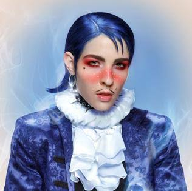
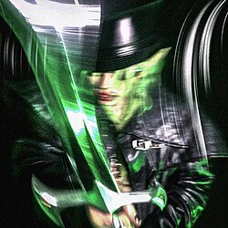
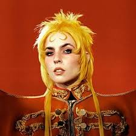

Musical Evolution Overview
Dorian Electra's discography spans several distinct creative phases. Their work has evolved from political philosophy music videos on YouTube to professional, in-depth, highly-produced concept albums. Their career has seen regular collaboration with several producers, including...
- Dylan Brady of 100 gecs
- Count Baldor
- Weston Allen
- Clarence Clarity
- Sega Bodega
- Frost Children
0. Early Works & Viral Origins (2010–2018)
Before releasing any studio albums, Dorian Electra first gained attention through their semi-viral music videos which were published on YouTube. These videos discussed political, philosophical, and economic topics. Singles like I'm in Love with Friedrich Hayek (2011) and FA$T CA$H (2012) revolved around the philosopical strategies/frameworks of Hayek and strategies to flourish economically, respectively.
These early singles from Electra allowed their name to spread within the YouTube music creator industry. This allowed for them to connect and be able to create music for other YouTube channels. This connected further to the drag race industry, where two of their singles between 2017 and 2018 featured several Drag Race contestants.
This period of time saw Electra fully transition to an era of stand-alone pop singles like Control, VIP, and Jackpot. These tracks were the foundation for Electra's most recognizable sound: their pitch-corrected vocals and distict production.
1. Flamboyant (2019)

A 2019 release, Flamboyant was Dorian Electra's debut full-length studio album. Through a story, the album addresses the traditional (and possibly toxic) ideals of masculinity, sexuality, and capitalism and corporate culture. It blended several genres such as electropop, synthpop, bubblegum bass, and hyperpop.
Highlights from Flamboyant:
- Man to Man: A track discussing toxic masculinity and how it affects societal perception.
- Career Boy: A song discussing unhealthy office culture and the consequences of capitalism.
- Flamboyant: The self-titled track which is an ode to self-expression through gender, fashion, and more.
2. My Agenda (2020)

A 2020 release, My Agenda explores themes of internet subcultures, satire on extreme political beliefs, and homophobia/prejudice against LGBTQ+ people through satire. The album combines industrial rock, hyperpop, and metal.
Highlights from My Agenda:
- Gentleman: A track which parodies the 'nice guy' archetype, combining it with toxic masculinity.
- Sorry Bro (I Love You): A hyperpop song about openly expressing love for another, with another connection to toxic masculinity.
- My Agenda: The self-titled track, which mocks conspiracy theories surrounding LGBTQ+ culture with dramatic metal / industrial rock production.
3. Fanfare (2023)

A 2023 release, Fanfare discusses the consequences and effects of fame, sexuality, the manipulation of media for a celebrity, and the worshipping of an idol. The album combines hyperpop, deconstructed club, industrial rock and symphonic rock.
Highlights from Fanfare:
- Freak Mode: A song which addresses pride in self-expression and sexuality.
- Sodom & Gomorrah: A track deeply rooted in sexuality and the reaction surrounding it, including its morality and relation to religion.
- Anon: A song discussing the harm of online anonymity and parasocial behaviour on the internet.
4. Dorian Electra (2026)
A 2026 release, the self-titled Dorian Electra is ironically a album entirely of covers. Using several songs as late from the 2000s, Electra transforms past songs and puts their own take on them, modernizing them with their own style.
Highlights from Dorian Electra:
- Feel Good Inc.: Changing the original from Gorillaz, the song features electropop production.
- Hips Don't Lie: Changing the original from Shakira, the song features bass house production.
- Young Folks: Changing the original Peter Bjorn and John, the song features soft indietronica production.
Want to learn more? Visit Visual Aesthetics & Themes Guide or return to the Home Page.